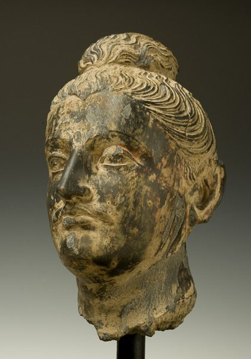
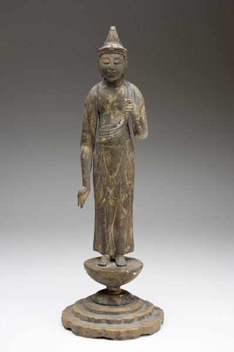
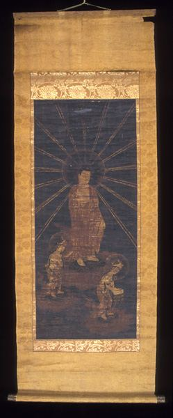
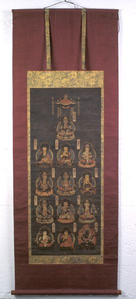
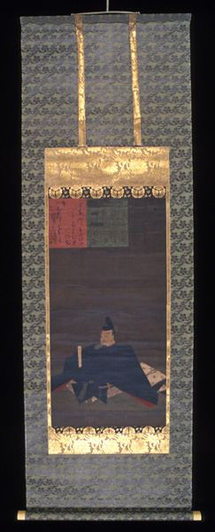
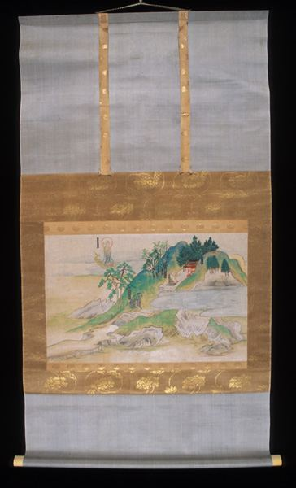
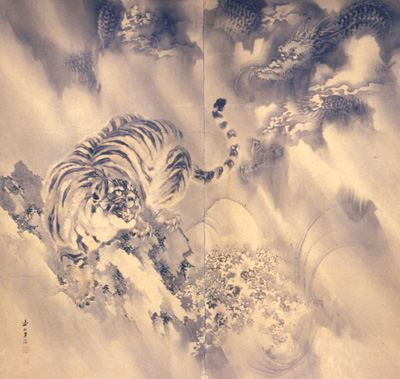
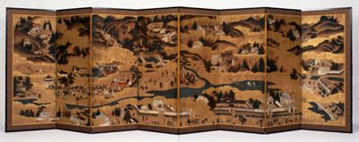
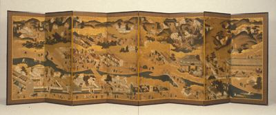

アメリカ日系一世 ロバート汐見の足跡（6）
社会貢献 — 文化財寄贈
アメリカには寄付は富裕層の義務とする文化があり、節税にも繋がるが、ロバート汐見の社会貢献はその範疇を超えている印象がある。
ロバートの姪である筆者の母より、｢継続的な寄付をしていると｢今年は無し｣と言えないので借金しても寄付をする年がある。｣とロバートがぼやいていた話を聞いた事があったが、その内容は全く判らなかった。どうやら大きく3種類に分かれ、一つは留学生支援、二つ目はオーケストラやオペラ団への支援、三つ目が文化財の寄贈と言うことが判って来たが、この度オレゴン大学併設Jordan Schnitzer Museum of Art (JSMA)よりロバート汐見の寄贈リストをご提供頂いた。資料としてリストを記載させて頂く。所蔵品名は英文からの翻訳のため必ずしも妥当ではない可能性がある点、ご容赦願いたい。






7. 琳派 蓮図 日本 江戸時代
8. 月入霧中烏鳴図 中国 黃磊生 昭和時代
9. 洛中工芸図 日本 狩野 安信 17世紀
10. 釈迦牟尼十六羅漢図 日本 室町時代
11. 稲作四季耕作図屏風 日本 狩野之信（雅楽助）室町または桃山時代
12. 芭蕉芍薬図屏風 日本 桃山時代
13. 松梅図屏風 日本 桃山時代
14. 龍虎図屏風 日本 岸駒 19世紀
15. 吉原廓図屏風 日本 土佐派 17世紀
16. 本草博物誌 日本 岸連山 19世紀
17. 阿弥陀来迎図 日本 鎌倉時代
18. 清国洛中洛外図屏風 日本 石田幽汀 18世紀
19. 鶴図屏風 日本 岸駒 19世紀



ハイライトはロバート晩年の1994年に寄贈された21. 洛中洛外図屏風である。筆者はこの屏風の存在をオレゴン大学の修士論文のアーカイブで知った。著者のHeather Hanson氏とはLinkedInで繋がり何回かヒアリングをさせて頂いた。ネットの恩恵である。
Ms. Hansonの修士論文
JSMAのHPより所蔵品の検索 も可能。